Own art and cybernetic names retained. Tier strips removed; rounded cards, tier backgrounds, currency icons and special-effect bullets restored. Weapons measured individually against 62 reference families.
275 tests passed. 51 fresh built-player captures passed, including controlled pillar damage and Predator charge/mutation/volley checks. Boss effects use our procedural visuals; these checks do not establish pixel-identical effects or human survival balance.
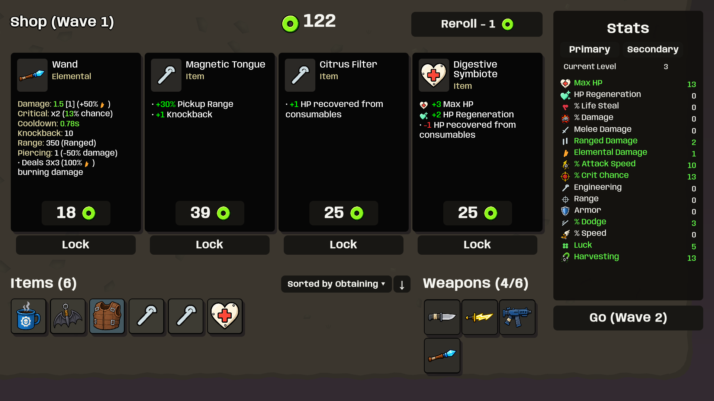
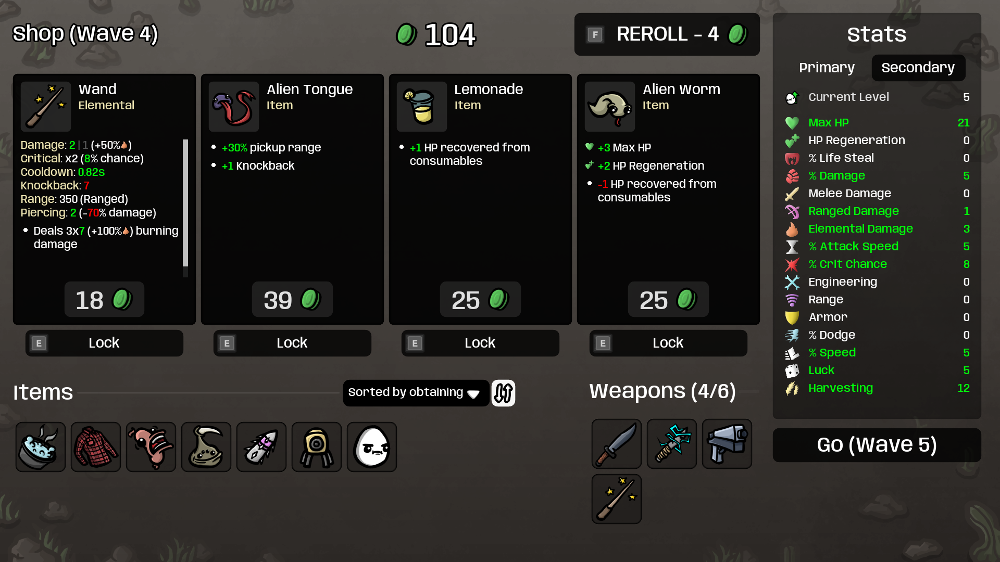
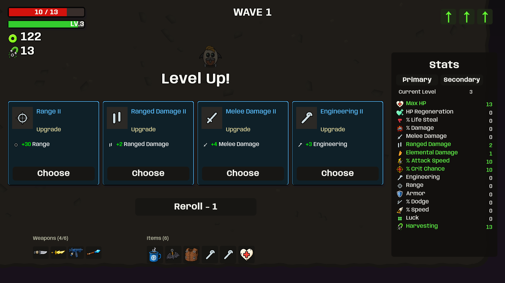
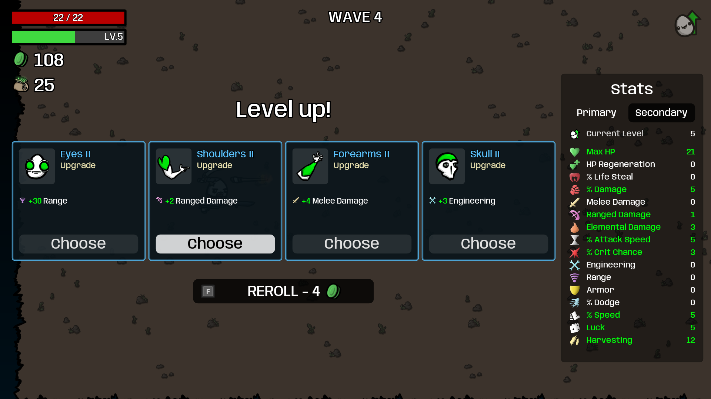
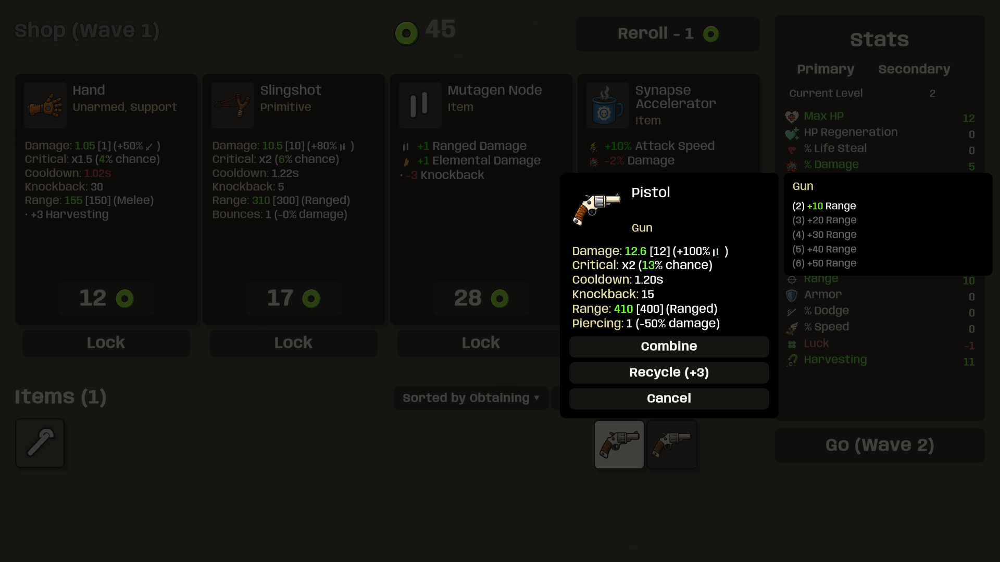
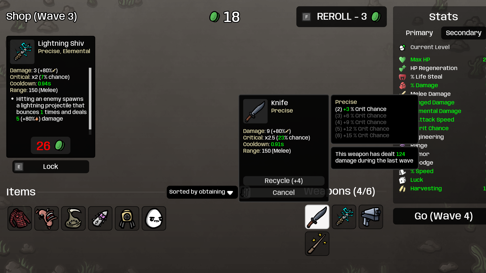
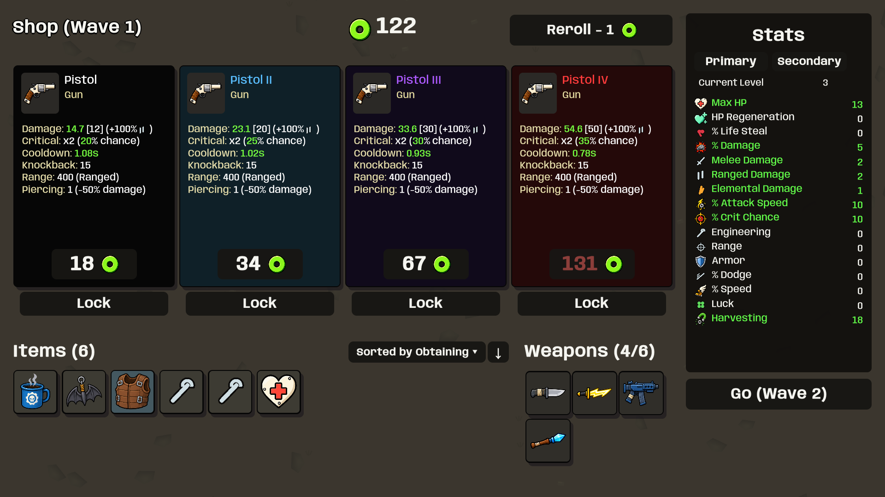
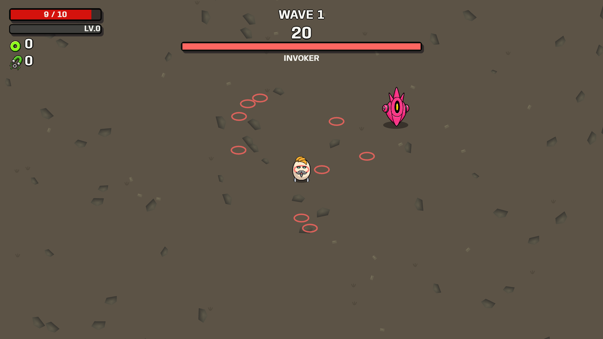
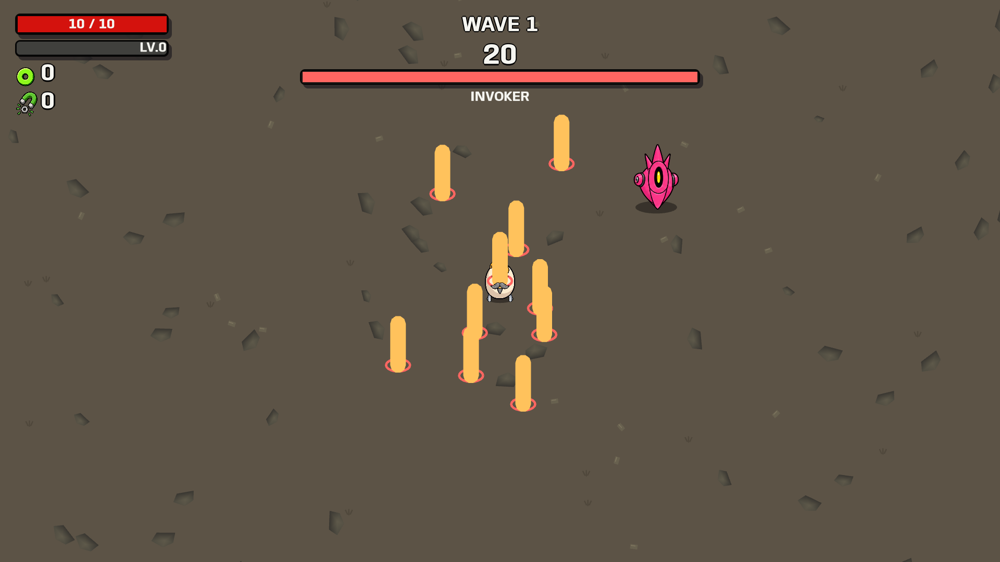
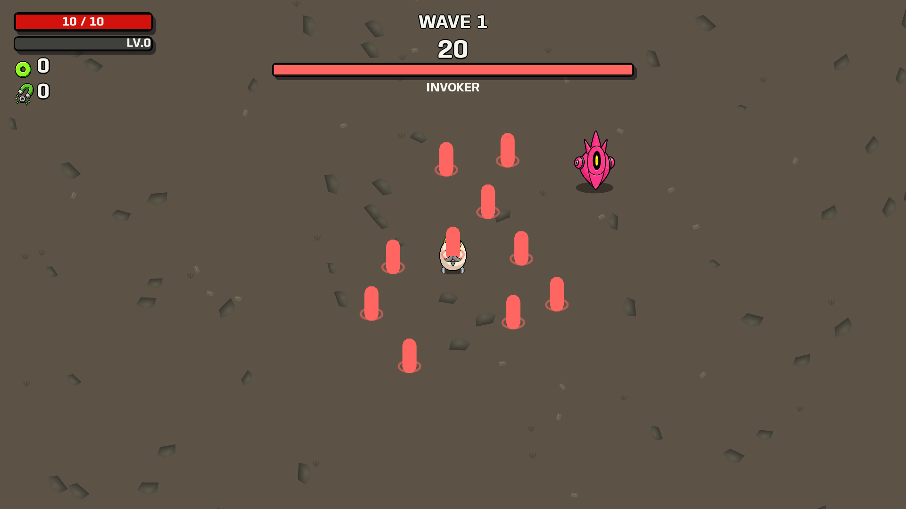
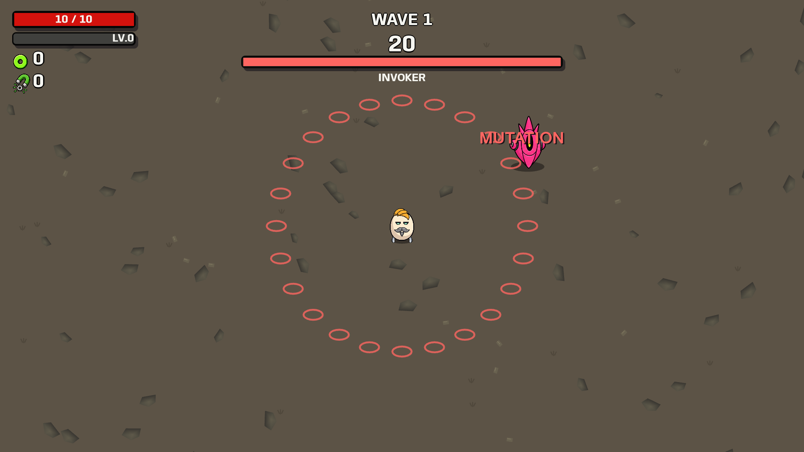
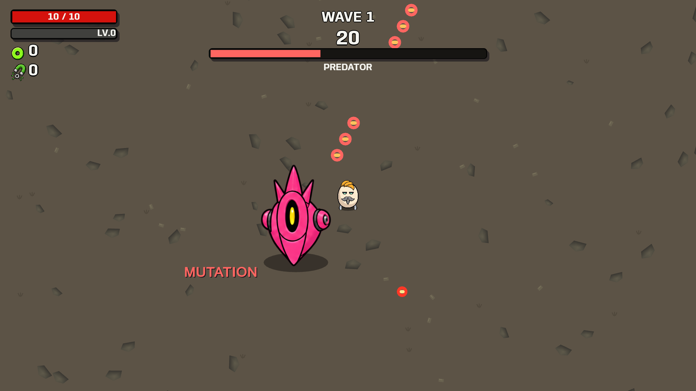
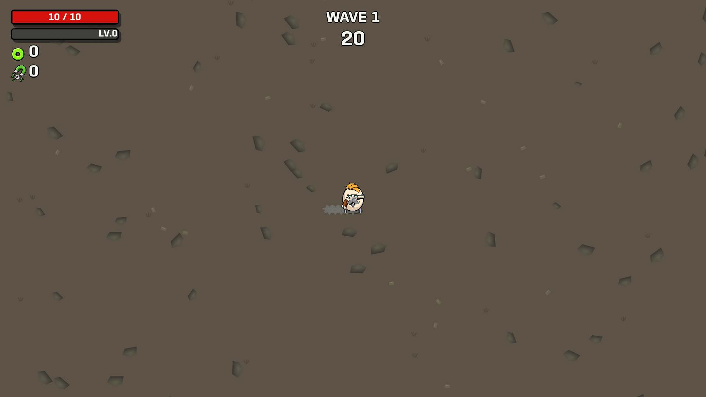
Weapon measurements · Runtime report · Audit and debugging notes